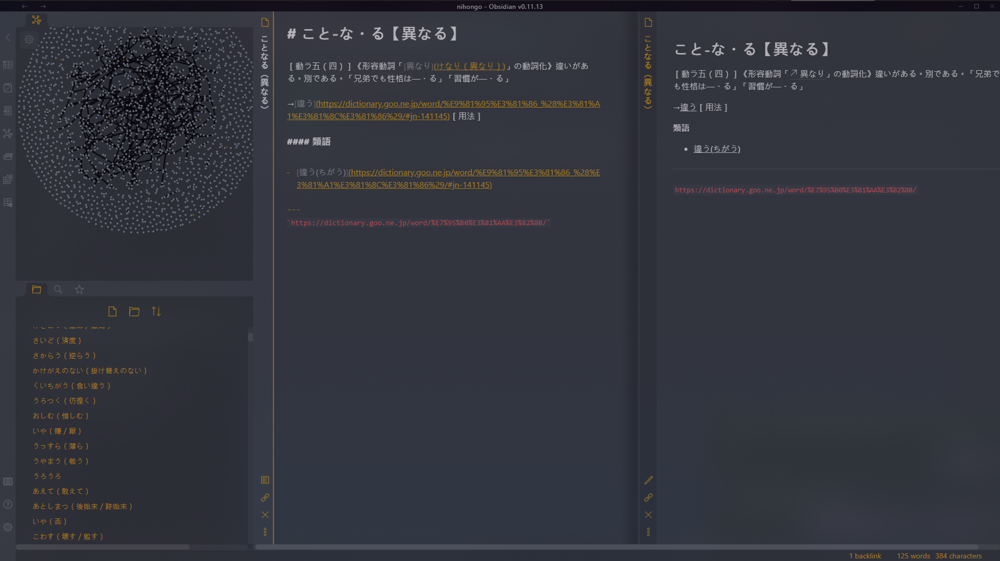
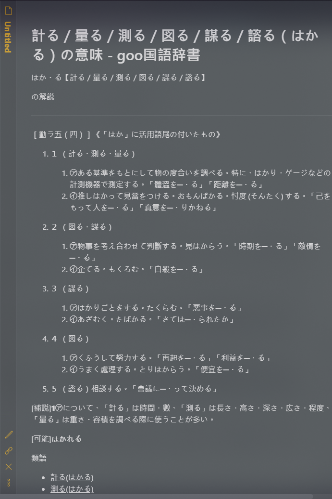
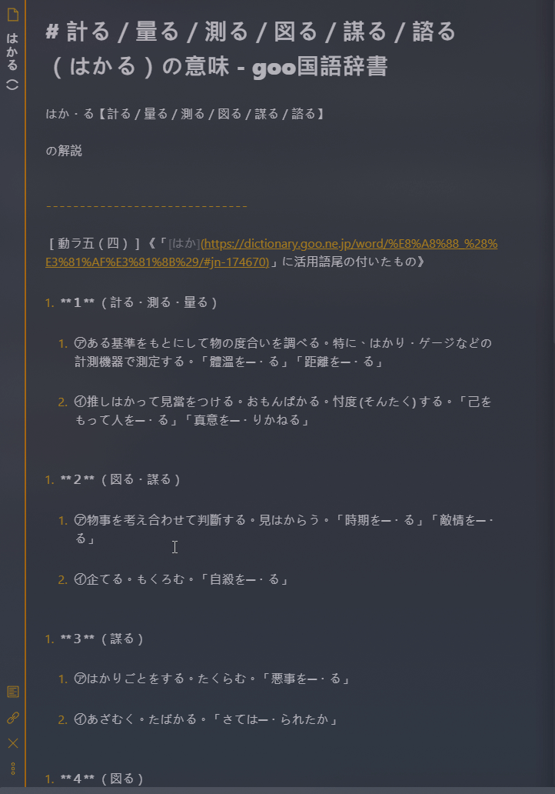

寫一個自己愛不釋手的工具：Obsidian Regex Pipeline
Obsidian
自從開始使用 Obsidian 以來，也超過半年了。一開始是抱著嘗試新東西的心態，剛好要學日文就拿來收納整理日文筆記，很快就愛上了這東西，一邊學習新知識一邊建立筆記，充實自己的資料庫的感覺，讓我這個數位倉鼠症患者實在是快樂得停不下來，有些下班後的夜晚坐下來編修筆記，轉眼就到了睡覺時間…
Obsidian 是一套網路化知識管理工具，是近年變得比較熱門的一種工具類型，其始祖是 Roam Research。這類工具的特色是基於知識具有關聯性的理念，使用者在編寫筆記的時候，標註筆記與筆記之間的關聯，而它們可以計算筆記之間的關聯，視覺化地呈現出一個網路圖表！隨著我們填入越多筆記，資料庫網路就會對我們越來越有價值，成為我們的虛擬大腦、外接記憶儲存空間，更棒的是在這個過程中，借助筆記之間的彼此連結，我們對於一個知識體系的學習效率也會大幅提高。
Obsidian 真的非常棒！但今天我要說的是我自己寫了一個插件的故事…（是的！Obisidian 支援第三方插件，太棒了）
監修筆記很花時間
這半年來持續投入時間的結果就是我有了一個超大又井井有條的日文筆記資料庫，再來就是我開始覺得手動調整格式很煩！

隨便舉個例子，這是我從 goo 辭書上使用 Firefox 的 MardDownload 插件抓下來的計る條目的內容：
# 計る／量る／測る／図る／謀る／諮る（はかる）の意味 - goo国語辞書
はか・る【計る／量る／測る／図る／謀る／諮る】
の解説
------------------------------
［動ラ五（四）］《「[はか](https://dictionary.goo.ne.jp/word/%E8%A8%88_%28%E3%81%AF%E3%81%8B%29/#jn-174670)」に活用語尾の付いたもの》
1. **１** （計る・測る・量る）
1. ㋐ある基準をもとにして物の度合いを調べる。特に、はかり・ゲージなどの計測機器で測定する。「體溫を─・る」「距離を─・る」
2. ㋑推しはかって見當をつける。おもんぱかる。忖度 (そんたく) する。「己をもって人を─・る」「真意を─・りかねる」
1. **２** （図る・謀る）
1. ㋐物事を考え合わせて判斷する。見はからう。「時期を─・る」「敵情を─・る」
2. ㋑企てる。もくろむ。「自殺を─・る」
1. **３** （謀る）
1. ㋐はかりごとをする。たくらむ。「悪事を─・る」
2. ㋑あざむく。たばかる。「さては─・られたか」
1. **４** （図る）
1. ㋐くふうして努力する。「再起を─・る」「利益を─・る」
2. ㋑うまく處理する。とりはからう。「便宜を─・る」
1. **５** （諮る）相談する。「會議に─・って決める」
\[補説\]**1**㋐について、「計る」は時間・數、「測る」は長さ・高さ・深さ・広さ・程度、「量る」は重さ・容積を調べる際に使うことが多い。
\[可能\]**はかれる**
類語
- [計る(はかる)](https://dictionary.goo.ne.jp/word/%E8%A8%88%E3%82%8B//#jn-174852)
- [測る(はかる)](https://dictionary.goo.ne.jp/word/%E8%A8%88%E3%82%8B//#jn-174852)
関連語
- [計測(けいそく)](https://dictionary.goo.ne.jp/word/%E8%A8%88%E6%B8%AC/#jn-66796)
- [目測(もくそく)](https://dictionary.goo.ne.jp/word/%E7%9B%AE%E6%B8%AC/#jn-218932)
- [目份量(めぶんりょう)](https://dictionary.goo.ne.jp/word/%E7%9B%AE%E5%88%86%E9%87%8F/#jn-217869)
比對一下原始網頁，會發現有一些奇怪的地方，比如網站上的數字清單沒有辦法正確捕捉；另外，對於筆記的格式我們可能有一些要求，比如說去除空行、冗餘文字。
在 Obsidian 中渲染出來的結果是這樣：

不可接受、絕對不可接受。
來看看要整理這則筆記我要做多少動作：

做一個養活自己的成熟工程師
是時候展現我真正的實力了！

這就是我為了飛速監修而寫的插件 Regex Pipleline，利用預先定義的 Regex 取代規則，快速調整筆記內容。
Obsidian 的插件不難寫
Obsidian 的插件 API 很不錯！其實我不常做這種事情，JS/TS 也算是滿生疏的一個領域，但仔細觀察了一下之後還是很容易上手了。個人心得是不像一般為了推出 API 而推出 API，實際使用上，感覺官方有認真在思考，根據開發者可能會有的需求去設計實用方便的 API。
比如，我本來預期，這類型的 API 會提供我「現在選取的文字開頭&結尾的 Index」，但它實際上直接提供了一個 getSelection() 可以取得完整的已選取文字，還提供了 replaceSelection() 讓你直接替換掉以選取的文字，相關的還有 somethingSelected()… 可以說是相當高階且人性化的 API 了，插件作者完全可以 Focus 在實現插件功能。
範例插件的架構也是簡單，且參數、變數、方法的命名可讀性高，我一看就大概就能對照 Obsidian 的介面看出代表什麼東西。
我算是對 TS/JS 這種以操作 DOM 來呈現畫面的機制很不熟的，但看了看範例的作法，大概就知道了要怎麼實作畫面元件。
作為一個 Electron App，它提供了 Chrome 的 Console，開發除錯也是輕輕鬆鬆。
插件審核
想要發布插件，讓插件會在 Obsidian 內建的第三方插件搜尋清單中出現，必須向 Obsidian-Releases 提交 PR，例。
官方的開發者會認真的看過你的程式碼之後才 Merge，整體來說是不錯的經驗。